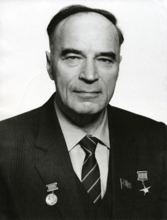

Знаменитые люди города

Ошанин Лев Иванович
советский поэт-песенник. Автор более 70 поэтических сборников, стихотворных повестей и пьес

Ушаков Фёдор Фёдорович
выдающийся флотоводец, адмирал, командующий Черноморским флотом и русско-турецкой эскадрой в Средиземном море.

Дерунов Павел Фёдорович
директор Рыбинского НПО моторостроения, лауреат Государственной премии СССР в области науки и техники